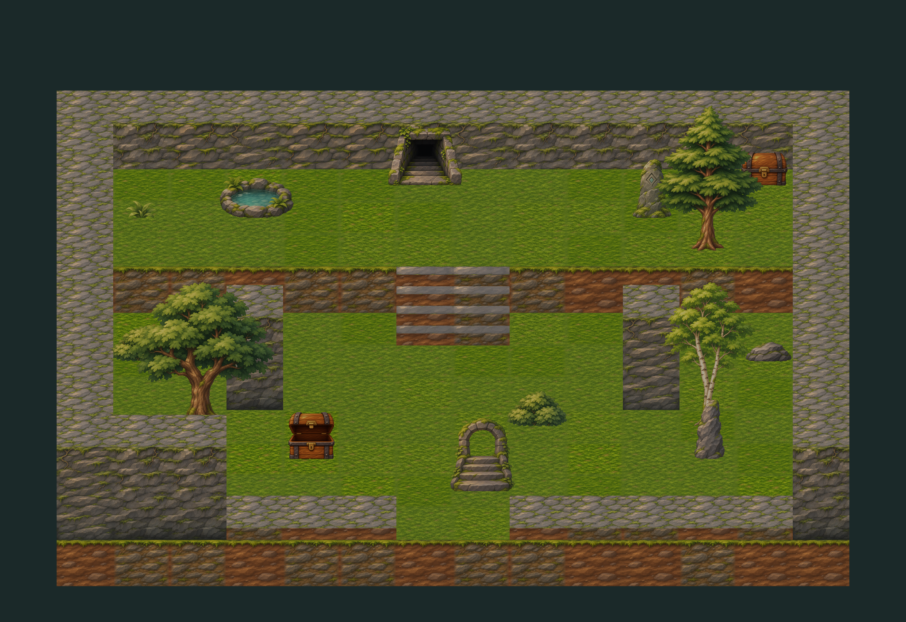
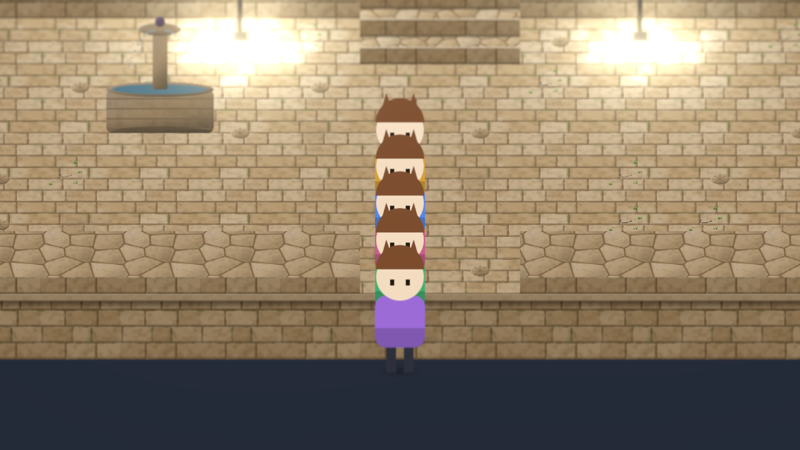

The look: what AAA HD-2D takes, and how we get there
The owner likes the gameplay and the engine; the look reads as 1999. This page answers the owner's questions with sources, audits the stage and its art, and proposes the way to Octopath Traveler's quality. The doc is hd2d-quality.md (calls LR1–LR14, decision P157); the packets are LK0–LK4 in the handoff. No game's copyrighted frames appear here: only our own captures.
The short answers
The hardware isn't the limit. The limits are the art we feed the stage, its lighting and camera model, and how we judge quality.
Not for the look. Shaders run on the GPU through Metal either way; a diorama is light on draw calls. Real limits: memory, heat, a young WebGPU on iOS, no engine editor. All workable.
No. Octopath's sprites are small and it renders at 720p or less. We draw more pixels than it does and look worse. Consistent pixel density and rendering layers matter.
As Square Enix did: target with references, prototype one scene until it's right, measure on the phone, then build the pipeline. LK1 is that slice.
True. My checks are technical, and I passed kits a trained eye would reject. The owner's eye against references becomes the gate; my checks only flag flat images.
Yes: a private reference library for every review, and a glTF import pipeline for licensed packs, CC0 models and painted textures. Licensed sources stay private.
What HD-2D is, from the people who made it
Octopath Traveler (2018, Unreal Engine 4), in its developers' talks: CEDEC+KYUSHU 2018, Unreal Fest East 2018, Square Enix's 2023 HD-2D video and the Octopath II interviews.
| Layer | What Octopath does | Ours today | Gap |
|---|---|---|---|
| Camera | Perspective 3D scenes, a diorama seen from slightly above; the camera sways a little in battle, locks at big moments | Orthographic, pitched 35°, one texel a device pixel | Big |
| Volume | By size: smaller than a character is a 2D sprite, character-sized is 2.5D (3D with no back: trees, rocks), larger is full 3D | Every frame a quad: floors, upright walls, cards | Big |
| Sprites | Pixel sprites under a fixed, staged spotlight (realistic light made them look like paper); about 350 images a character | Unlit, with a colour tint and a soft round shadow | Big |
| World light | Restrained on painted pixels; 3D light on 2.5D objects; ambient light so shadows aren't black; dramatic per scene | Lambert under a hemisphere, one sun, four lamps; no shadows | Big |
| Focus | The focal area crisp, the rest blurred on purpose by depth, so the frame reads as more detailed | A screen-space blur, not by depth | Medium |
| Post | Per-scene grading, bloom, bokeh depth of field, lens flare, ambient cubemap, vignette, a little chromatic aberration | Bloom at 0.86 (only white glows); no tone mapping or grading; off under the saver | Big |
| Atmosphere | Particles, light shafts, water, motion everywhere | Linear fog; lamp flicker | Medium |
| Art | One art direction, one pixel density, late-SNES detail | Painted top-down kits, code-drawn kits, smooth 256 px characters: three styles | Big |
| Process | The look prototyped in Maya first, then matched in engine; tuned per scene by artists | Kits approved one by one, no references | Big |
| Resolution | 720p docked, about 576p handheld, 30 fps | Native 3× phone density (more pixels than Octopath) | Not the gap |
Where we are, in our own captures


The phone's budget
Peak 32-bit GPU throughput, in TFLOPS (third-party databases, theoretical). Octopath ran at 720p and 30 fps on the Switch's docked figure.
Show as a table
| Device | TFLOPS | Note |
|---|
Not limits
- GPU power: at native 3× density an iPhone 15 Pro has about 1.6× Octopath's budget per pixel; rendering the 3D scene at 2× and upscaling gives several times that.
- JavaScript: it costs CPU per draw call, and a diorama is a few hundred.
- The API: three.js r187 (pinned) has cascaded sun shadows, clustered lights, and bloom, depth of field and ambient occlusion passes, on WebGL 2 too.
Real limits, and the answer
- Memory: Safari kills heavy pages, with no published cap: a budget of about 400 MB a scene.
- Heat: 30 fps exploring, a saver tier.
- WebGPU on iOS 26 is young: WebGL 2 now, WebGPU when steady.
- No editor: a small look-tuning page instead (LK2).
Judging quality: the honest part
My checks catch seams, edges, sizes and repeats. They say nothing about beauty, and I called kits done because they passed them. I compare two images well; I can't hold an absolute bar without a target. The fix:
- A private reference library of the target games' frames, tagged by scene type (LR11).
- Every look review side by side, our frame beside two or three references at phone scale; the owner decides.
- Look measures on every capture against the references' ranges: luminance spread, saturation spread, share in shadow, share blurred, texel density of sprites against the world, palette size, focus-band sharpness. They flag flat images; they don't judge taste (LR12).
- Nothing visual ships unapproved (LR13).
- The target as a still first, a Blender render of the hero scene, as Octopath prototyped in Maya (LR14).
Importing high-quality assets
| Source | Fits HD-2D? | Licence | Cost | Use it for |
|---|---|---|---|---|
| Licensed packs (itch.io, Unity Asset Store) | Some | Unity's standard licence allows other engines when built into the game, not redistributed | $5–$60 | Environment pieces at quality, quickly |
| CC0 models (Kenney, Quaternius) | Shapes | CC0 | Free | Houses, props and rocks to re-texture |
| CC0 textures, HDRIs (Poly Haven) | Photoreal | CC0 | Free | Light probes and reference |
| AI-painted textures (ChatGPT, Draw Things) | With a style guide | Ours | Free | Textures, trims and decals at volume |
| Blender, scripted by Claude | Yes | Ours | Free | Building volume on the kit's grid |
| Code-drawn shapes (P147 today) | No | Ours | Free | Interface marks and icons only |
Licensed sources stay private and reach the games only as built kits in master data's private release (LR10). The import path: glTF and textures, cleaned in Blender, into kit format v2 (2D, 2.5D or 3D; texel density).
The approach
Device tiers (LR7)
| Tier | What it draws |
|---|---|
| High | Everything; 30 fps exploring, 60 in battle where it holds (iPhone 13 and later) |
| Medium | Half-resolution depth of field and ambient occlusion; no light shafts |
| Saver | No post layer, baked shadows, as today |
Budgets (LR6) and cost
| Item | Target |
|---|---|
| Frame rate | 30 fps sustained over ten minutes |
| GPU memory | About 400 MB a scene |
| First load | Under about 15 MB a scene, cached after |
| Asset packs | $5–$60 each, if the owner says yes |
| Cloud | Existing private buckets; no new resource |